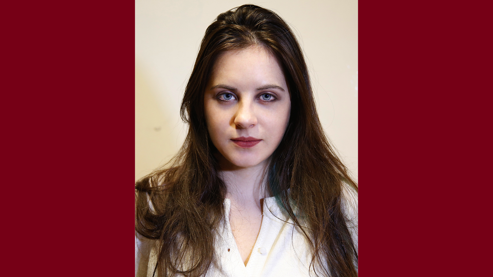
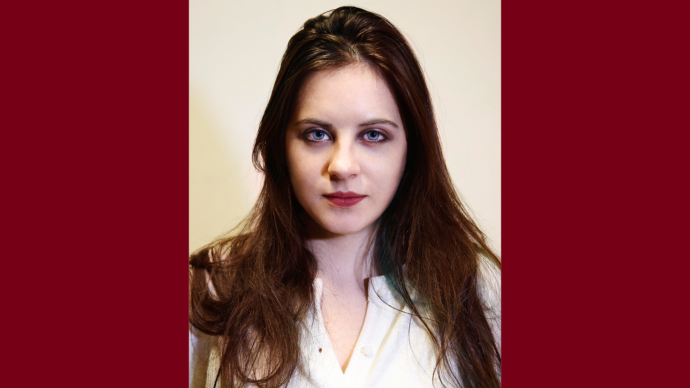

<html>
	<head>
		<script src="http://code.jquery.com/jquery-1.11.1.js"></script>
		<script type="text/javascript" src="/socket.io/socket.io.js"></script>
		<script type="text/javascript" src="js/p5.js"></script>
		<style type="text/css">
			canvas, img {
			    image-rendering: optimizeQuality;
			    image-rendering: -moz-crisp-edges;
			    image-rendering: -webkit-optimize-contrast;
			    image-rendering: optimize-contrast;
			    -ms-interpolation-mode: nearest-neighbor;
			}

			#maincanvas{
				height: 100%;
				width: 100%;
				opacity:1;
				position: absolute;
				cursor: url(img/cursor0.png), auto;
			}
		</style>
	</head>
	
	<body>
		<!--img id="body6" class = "bodyimage" src="img/6.jpg" >
		
		
		
		
		
		
		
		<canvas id="maincanvas"></canvas>
		<!--
		<div id="fake" style="height:100%;width:100%; top:20; left:20;position:fixed; z-index = -10; background:gray; opacity:0;" draggable = "true" >adsfasdf </div>
		-->
	</body>
	
	<script type="text/javascript" src="js/bodyimage1.js"></script>
</html>

